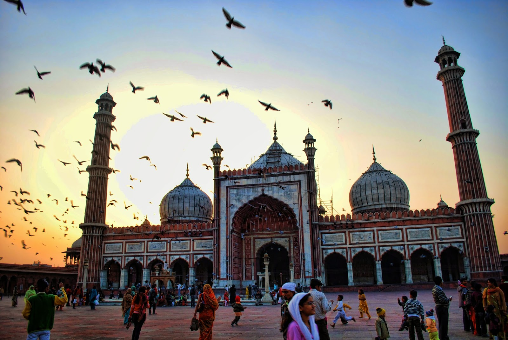

This great mosque of Old Delhi is the largest in India, with a courtyard capable of holding 25,000 devotees. It was begun in 1644 and ended up being the final architectural extravagance of Shah Jahan, the Mughal emperor who built the Taj Mahal and the Red Fort. The highly decorative mosque has three great gates, four towers and two 40 m-high minarets constructed of strips of red sandstone and white marble. Travellers can hire robes at the northern gate. This may be the only time you get to dress like a local without feeling like an outsider so make the most of it.